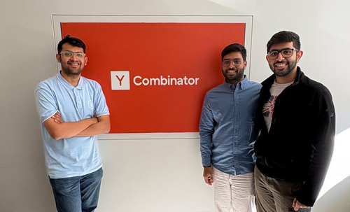

Personal notes · 2026
Hi, I’m Pavan — most friends call me PK.
I’m an AI researcher turned founder. Right now I’m co-founder and CEO of TensorTest (Y Combinator W26), where two close friends and I build training data, reinforcement-learning environments, and evaluations to test whether AI agents can actually finish real work.
Before this, I was a Research Fellow at Microsoft Research India studying how language models can learn continuously the way children do, and spent five years at IIT Bombay teaching speech models to tell bedtime stories in character voices. Almost everything I’ve worked on circles back to one stubborn question: when a machine announces it’s done, how do we know the work is any good?


PostSuperIntelligence & a 187-gram co-host
Most AI commentary swings between breathless singularity hype and doom. I started PostSuperIntelligence to read the primary papers, S-1 filings, and lab audits in plain English — and ask what human taste, science, and ordinary Tuesday afternoons look like once intelligence gets cheap.
The postcard above is our north star: a lived-in future where the machines worked out, somebody still hangs linen shirts in the sun, and a cat still naps on the balcony. On camera, I share the desk with StackChan — a palm-sized ESP32 robot wired to a live voice loop whose favourite hobby is heckling Silicon Valley buzzwords.
Three friends, 30 days, zero safety net
Y Combinator · Winter 2026In August 2025, my friends Nirmit Arora, Gunin Gupta, and I entered Together Fund’s Voice AI Hackathon in Bengaluru (60 finalist teams out of 300+), built Kaash — a voice-first ERP builder for small businesses — and won. Within thirty days we left our jobs at Microsoft Research and Kearney with no pitch deck and no backup plan.
We got into Y Combinator’s Winter 2026 batch as Ritivel. After fifty-plus calls with regulatory writers in pharma, we built AI agents inside Word, SharePoint, and Veeva to draft dense FDA submissions (CSRs, CTDs, INDs, BLAs) where every single sentence linked back to its source table — because in regulated work, a fluent paragraph without a trail is just a liability in good syntax.
Building in the wild kept surfacing the same deeper bottleneck: frontier models are great at looking finished and terrible at knowing when the work actually holds up. That insight became TensorTest. Today we work with AI labs, robotics companies, and enterprises across the stack — building pre-training and post-training datasets, production traces, RL environments, and evaluation suites, and staffing domain experts onto client teams.

Where I’ve been
Hostel 18 → MSR → San Francisco-
2025 – now SF & Bengaluru
Co-founder & CEO, TensorTest (formerly Ritivel) YC W26
Leading research, evaluations, RL environments, and lab partnerships alongside Nirmit Arora and Gunin Gupta. Published Timeline-Bench and CharacterBench (evaluating 8-hour autonomous Blender character builds with Atrium).
-
2024 – 2025 Bengaluru
Research Fellow, Microsoft Research India
Selected into MSR India’s fellowship cohort (~15–25 fellows nationally) right out of college. Worked with Dr. Navin Goyal and Dr. Satya Lokam on brain-inspired continual learning — building CurLL, a 23.4-billion-token developmental curriculum modeled on how children aged 5–10 acquire 32 skills without forgetting yesterday’s lessons — alongside research on tamper-resistant pretraining loss landscapes.
-
2023 – 2024 Aachen, Germany
Speech Scientist Intern, AppTek
Built expressive multi-speaker speech-synthesis models and multilingual speech data pipelines for production voice systems.
-
2019 – 2024 Mumbai, India
B.Tech (Electrical Eng.) + M.Tech (AI & Data Science), IIT Bombay
Five formative years anchored in Hostel 18, Room 2079. Entered via JEE Main (99.76th percentile among ~1.2M candidates) and JEE Advanced (top 2.7%), earned a first-year merit branch upgrade into Electrical Engineering, received the Institute Merit-cum-Means Scholarship, and won a Bronze Medal at Inter-IIT Tech Meet 11.0. Spent 2022–2024 at CFILT & Speech Labs with Prof. Pushpak Bhattacharyya, Prof. Preethi Jyothi, and Prof. Preeti Rao, and TA’d Deep Learning for NLP and Speech, NLP & the Web.
-
2020 – 2023 Early detours
Cargill Global Scholar · Bosch · Telesoft · Cuemath
Chosen as 1 of 10 Cargill Global Scholars across India (2021 cohort). Along the way: wired industrial CarMaker ADAS simulations to ROS robots in C++ at Robert Bosch, built a 97%-accurate banking call-routing ML system at Telesoft, tutored 1st–10th graders in the US and Canada in math through Cuemath, and taught children through IIT Bombay’s National Service Scheme.
Selected papers & benchmarks
191+ citations · 14+ NeurIPS & ICLR reviewsI tend to build the measuring instrument before trusting the model — whether that’s testing if a storyteller TTS gives the wolf its own voice, if an LLM catches sarcasm, or if an autonomous editor cuts a watchable film. Full list on Google Scholar.
-
Timeline-Bench: Evaluating Agents on Realistic Video-Editing Tasks, from Raw Footage to Final Cut
Preprint · 202656 real client editing jobs from raw takes to final cut, 896 runs across 16 coding-agent setups, and a verifier calibrated on 2,582 blind judgments from 43 professional editors. Most agents pass technical checks and fail human craft.
-
Gave frontier models 8 hours on a Linux desktop with Blender to sculpt editable 3D characters from artist reference sheets. Top models nail whole-body silhouette (up to 94% F-score) while missing the 1% of face, lid, and seam geometry that gives a character its soul.
-
CurLL: A Developmental Framework to Evaluate Continual Learning in Language Models
BabyLM @ ACL 2025A 23.4B-token synthetic curriculum grounded in human skill development from ages 5 to 10 (32 skills, 128 sub-skills, 1,300+ indicators) to measure catastrophic forgetting vs. forward skill transfer in sequential pretraining.
-
Foundational Models Must Be Designed To Yield Safer Loss Landscapes That Resist Harmful Fine-Tuning
ICML 2025 · R2-FMWhy post-training safety wrappers crumble under a few dollars of adversarial fine-tuning — and how shaping pretraining loss geometry can make harmful adaptation costly without breaking legitimate downstream training.
-
WikiDO: A New Benchmark Evaluating Cross-Modal Retrieval for Vision-Language Models
NeurIPS 2024 · D&B380K geographically and culturally diverse Wikipedia image-text pairs exposing how cozy Flickr/COCO evaluations flatter vision-language models (BLIP-2 drops from ~95% R@1 on Flickr to ~66% out-of-distribution).
-
PUB: A Pragmatics Understanding Benchmark for Assessing LLMs’ Pragmatics Capabilities
Findings of ACL 202428,000 examples across 14 tasks testing implicature, presupposition, reference, and deixis — measuring what humans imply between the lines rather than what they literally say (~150 citations across Stanford, Berkeley, CMU, Oxford, and more).
-
Brought task-vector arithmetic into speech: subtracting pretrained weights from emotion-tuned weights lets you dial emotion intensity, negate anger into calm, mix “bittersweet” (happy + sad), and transfer emotion to unseen voices — mostly inside just 5M text-encoder FFN parameters.
-
Released a 16.8-hour Hindi children’s storytelling dataset narrated by a single voice actor performing distinct characters, showing how dialogue attribution teaches a TTS model to keep every character’s voice consistent across a story.
-
My first paper — built on 32.7 hours of English children’s stories so text-to-speech wouldn’t read the wolf’s dialogue in the same polite accountant voice as the narrator. Supported by three Microsoft Research travel grants ($6,500 across Dublin, Malta, and Greece).
When the laptop closes
Life outside benchmarksI’m originally from Andhra Pradesh, though growing up across several Indian states meant spending my first twenty years constantly learning new neighbourhoods, languages (Telugu, Hindi, English), and ways people think.
Small, opinionated hardware
My desk is usually covered in servo wires and USB-C cables — wiring WebSocket bridges into StackChan, sourcing a DIY walking MicroDuck biped robot from scratch in Bengaluru, or hacking on Lucy, an animated desk speaker that gestures while it talks.
Things with no unit test
Away from screens, I lift at the gym, write occasional poems and songs in English and Hindi, paint in oils, and am very slowly learning the violin. After a week of grading AI outputs, it’s nice to make things that don’t need a pass/fail score.
“On my 2023 undergrad CV, I put two bullets right next to each other: ‘I am fascinated by large language models’ and ‘I am frightened by large language models, and therefore interested in alignment.’ Years later, both halves still hold up.”
- Pavan Kalyan Tankala and the trouble with done — YesPress, October 2026
- Pavan Kalyan Left the Lab to Make Pharma Paperwork Move at Machine Speed — YesPress, August 2026